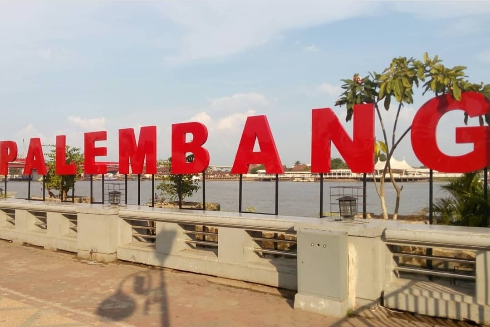
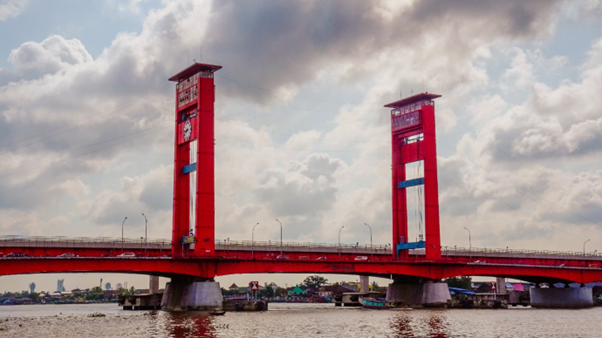
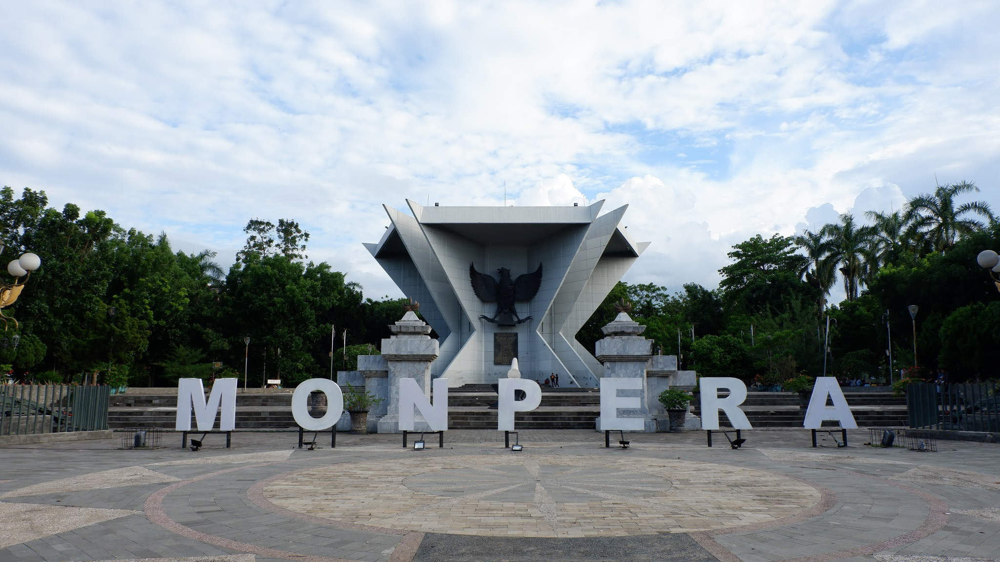

Tentang Palembang
Kota Palembang (Jawi: ڤاليمبڠ) adalah ibu kota provinsi Sumatera Selatan, Indonesia. Luas Kota Palembang dengan sekitar 352,51 km²[3] Pada akhir tahun 2023, kota ini dihuni oleh 1.772.492 jiwa. Kota Palembang juga kota terpadat dan terbesar kedua di Sumatra setelah Kota Medan, kota terpadat dan kota terbesar kelima di Indonesia setelah Jakarta Raya, Surabaya, Bandung, Medan, dan kota terbesar kesembilan belas di Asia Tenggara. Kota Palembang dan beberapa kabupaten tetangganya (Kabupaten Banyuasin, Kabupaten Ogan Ilir, dan Kabupaten Ogan Komering Ilir) dikembangkan oleh pemerintah pusat sebagai wilayah metropolitan di Indonesia dengan kawasan yang disebut Patungraya Agung atau Palembang Raya. Sejarah Palembang yang pernah menjadi ibu kota kerajaan bahari Buddha terbesar di Asia Tenggara pada saat itu, Kedatuan Sriwijaya, yang mendominasi Nusantara dan Semenanjung Malaya pada abad ke-9 juga membuat kota ini dikenal dengan julukan "Bumi Sriwijaya". Berdasarkan prasasti Kedukan Bukit yang ditemukan di Bukit Siguntang sebelah barat Kota Palembang yang menyatakan pembentukan sebuah wanua yang ditafsirkan sebagai kota pada tanggal 16 Juni 683 Masehi menjadikan kota Palembang sebagai kota tertua di Indonesia. Di dunia Barat, kota Palembang juga dijuluki Venice of the East ("Venesia dari Timur") dan Serambi Hadramaut, kota ini mendapat julukan Serambi Hadramaut dikarenakan beberapa gelar Habaib yang ada disini tidak dijumpai di daerah lain di Indonesia. Kota Palembang adalah kota tertua di Indonesia. Asal usul nama Palembang mempunyai beberapa versi. Salah satu versi adalah pada saat penguasa Sriwijaya mendirikan sebuah Wanua (kota) yang sekarang dikenal dengan Kota Palembang; Topografi kota Palembang dikelilingi oleh air bahkan terendam oleh air. Air tersebut bersumber dari anak sungai maupun rawa bahkan menurut data statistik 1990, Palembang masih terdapat 50% tanah yang tergenang oleh air (rawa).
Tempat wisata Yang Wajib Dikunjungi
Ampera Bridge
Jembatan Ampera adalah salah satu landmark ikonik di Kota Palembang, Indonesia. Lokasinya melintasi Sungai Musi, membagi kota menjadi dua bagian, Seberang Ulu dan Seberang Ilir. Desainnya yang unik, dengan dua menara tinggi di ujungnya, memberikan kesan monumental. Dibangun pada tahun 1962, jembatan ini diresmikan oleh Presiden Soekarno pada tahun 1965 dengan semboyan "Amanat Penderitaan Rakyat". Jembatan Ampera tidak hanya menjadi jalur transportasi utama, tetapi juga menjadi simbol kebanggaan bagi warga Palembang. Keindahan arsitektur dan lokasinya yang strategis menjadikannya objek wisata populer di kota ini.
Palembang Grand Mosque

Masjid Agung Palembang merupakan salah satu masjid terbesar di Indonesia, menampilkan arsitektur Islam yang indah. Terletak di Kota Palembang, masjid ini menjadi landmark penting dan pusat aktivitas keagamaan bagi masyarakat setempat. Dengan desain yang megah dan bersejarah, Masjid Agung Palembang menjadi destinasi wisata religi yang populer di kota ini.
Monpera
Monpera, singkatan dari Monumen Perjuangan Rakyat, adalah monumen yang berdiri megah di Kota Palembang. Monumen ini didedikasikan untuk mengenang perjuangan rakyat Palembang dalam memperoleh kemerdekaan Indonesia. Terletak di pusat kota, Monpera menjadi simbol semangat dan kebanggaan bagi masyarakat Palembang. Dikelilingi oleh taman yang indah, Monpera juga menjadi tempat rekreasi yang populer bagi warga lokal dan wisatawan yang berkunjung ke Kota Palembang.